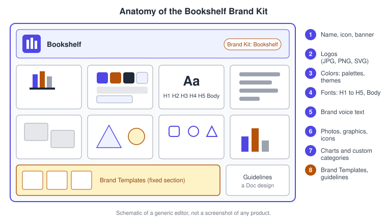
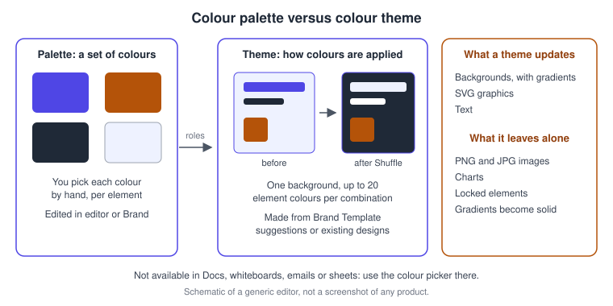
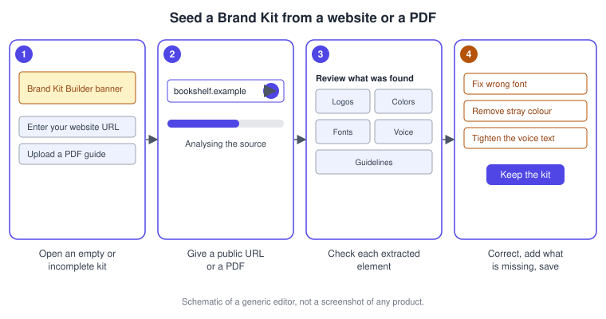
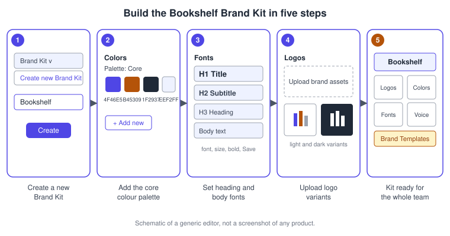
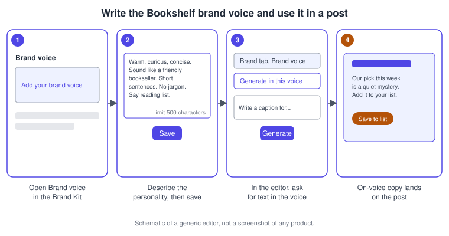

Brand Kit and Brand Voice
|
This content was generated with the assistance of AI and should be verified against the official documentation before being relied on in production. |
This page was checked against the official Canva Help Center and the Canva pricing page on 2026-11-07. A Brand Kit is the part of Canva (web, desktop app and mobile apps, plus the Affinity by Canva app) where a team stores its official logos, colours, fonts, brand voice and other assets so that every design can be built from approved parts. It is a generally available feature of the Visual Suite. One part of sharing, sharing a Brand Kit with specific teams of an organisation, is described by the Help Center as a beta for selected Canva Enterprise users.
Plan requirements differ per asset type, and the Help Center repeats them article by article. Palettes are the only part that a Free account can touch, and only in a minimal form: one palette with up to three colours. Logos, fonts, brand voice, colour themes, custom asset categories and several kits at once need a paid plan (Pro, Business or the legacy Teams plan, Enterprise, Education and Nonprofits). Inside a team, only owners, administrators and brand designers can create or edit the kit, while members use it. Prices are not repeated here and are published at https://www.canva.com/pricing/; the feature matrix by subscription is on Plans, Pricing and AI Allowance. Business replaced Teams for new sign-ups; existing Teams subscribers keep their plan, and the Help Center articles still name Teams next to Business.
Two features on this page touch Canva AI. The Brand Kit Builder reads a website or a PDF to fill a kit, and brand voice steers the output of Magic Write. Which allowance tier each draws on, and how much of it remains, is explained in the Help Center article on AI usage and summarised on the allowance page; no tier is asserted here. Canva AI 2.0, the conversational assistant covered on Canva AI Assistant, can use the Brand Templates added to a kit to generate designs that match the brand more closely, so a well-kept kit pays off there too.
The running example is Bookshelf, the book catalogue and reading-list app designed in the Figma sub-section. Its colours and type decisions come from the Bookshelf design system documented on Design Systems and Design Tokens: an indigo primary colour, an amber accent, a dark ink colour and a pale indigo tint. This page rebuilds those decisions as a Canva Brand Kit so that the launch campaign (the posts, the deck, the flyer and the Book of the week template) starts from one source of truth.

What a Brand Kit is and why it exists
A design that looks different every time it is made costs trust. A Brand Kit removes the guesswork by putting the approved parts in the same place that people already look when they design: the Brand tab of the editor side panel, the colour panel, the font panel and the Text tab. The Help Center describes it as a way to upload and organise a team’s official logos, colours, fonts and assets in one place, with admins and brand designers able to create several kits for different teams, clients or campaigns.
A kit does not by itself stop anybody from picking another colour; it makes the right choice the easy one. The enforcement side belongs to Brand Controls and to locked Brand Templates, which are covered on Brand Templates, Controls and Approvals. Members of a team see the kit in the editor, whereas the people who maintain it work from the homepage.
Anatomy of a Brand Kit
Every kit has a landing page that can look like the brand: you can give it a name, an icon and banner colours (a main and a secondary colour). Below the banner sit tiles for the asset categories, a fixed Brand Templates section and a Guidelines page.

-
The banner carries the kit name, icon and two banner colours, edited through the more menu and Edit details.
-
Logos accept JPG, PNG and SVG files, and the Help Center advises PNG for flexible use and SVG for scalable use, especially in print.
-
Colors hold palettes (the colours) and colour themes (how the colours are applied).
-
Fonts hold one default font per heading level, H1 to H5, plus body text.
-
Brand voice holds a short written description of how the brand talks.
-
Photos, graphics and icons are asset categories for uploads; the Brand Kit best-practices guide advises SVG for graphics and icons.
-
Charts take your brand colours so that charts from the Elements tab pick them up automatically; videos can also be stored on paid plans with admin-controlled access.
-
The Brand Templates section and the Guidelines page are fixed: the section appears in every team kit and cannot be moved, renamed or removed, and Guidelines opens a Doc design in which you describe the brand’s story, values and asset rules.
Default and custom categories
Logos, Colors, Fonts, Brand Voice and Charts are default categories with features specific to their type. Anything else goes into custom asset categories: a team can create up to 40 categories (for photos, illustrations, icons or anything the brand uses), rename them, drag them into order, group them into sections and remove them. A custom category can mix uploaded assets, Brand Templates and folders from Projects, and each category can carry guidelines with a summary and do and don’t lists that members see when they open the category in the editor. A Brand Template added to a custom category also appears in the Brand Templates section.
Limits to plan for
| Item | Limit stated by the Help Center |
|---|---|
Brand Kits per team |
Up to 1,000, depending on the subscription |
Assets per category in one kit |
Up to 2,000 |
Custom asset categories |
Up to 40 |
Colour palettes (paid plans) |
100 palettes with up to 100 colours each |
Colour palettes (Free) |
One palette with up to three colours |
Colour themes |
Up to 24 themes, each with up to 12 combinations |
Colours per theme combination |
One background colour and up to 20 element colours |
Brand voice text |
500 characters |
Personal Brand Kits |
One per person, not counted against the team limit |
The upload limits do not apply to Colors, Fonts, Brand Voice and Charts, because they need no file uploads. To go beyond a category limit, link existing folders to the kit instead of uploading copies.
Who sees and edits what
The roles that matter are owner, administrator and brand designer, who can edit, and member, who can only use. In Canva Enterprise the split is finer: organisation administrators and organisation brand designers create and edit kits for the whole organisation, while team administrators and team brand designers manage kits for their own team. Organisation brand designers can also open a kit owned by another team and choose Edit in owning team, which switches your current team to the owner after a confirmation. In Education, only organisation administrators in the Staff team create and manage kits, and kits made in Student teams cannot be shared across the organisation. Roles are explained further on Teams, Roles and Groups.
Access to a kit can be narrowed too. You can add a kit to a folder and then set Share, Access settings, Folder access only, so that only people who can open that folder see the kit; the Help Center points out that this includes administrators and designers. Enterprise and Canva for Districts organisation brand designers can share a kit with the whole organisation, and in the beta mentioned above, with up to 30 selected teams. A kit with linked folders needs those folders' sharing permissions updated before it can be shared with the organisation.
Personal Brand Kits
When an administrator enables them in Settings, Permissions, Brand (Everyone, selected roles and groups, or No one), a member can create one private kit of their own. It holds colours, fonts, logos and images, is invisible to administrators and brand designers, and can be shared with named people or groups who may use but not edit it. Its limits are specific: it cannot be added to folders or have folders linked, it has no Guidelines document (use category guidelines instead), it cannot hold Brand Templates, and its Brand Kit Builder works only with the URL option. The Help Center lists personal kits for Canva Teams, Business, Enterprise and select Education plans.
Colours, palettes and colour themes
A palette is a set of colours. A theme is a recipe for applying them. Keeping the two apart is the single most useful idea on this page: a palette tells people which colours are allowed, and a theme recolours a whole design at once.

Palettes
Create palettes from Brand, Colors with the add icon and Add palette, then Add new for each colour, picking a colour or typing a hex code. Name a palette by selecting its name, delete a colour by hovering over its tile, and delete a palette from its more menu; a kit must keep at least one palette. For print work, paid users can add CMYK equivalents to a brand colour by selecting its tile and choosing Add CMYK (Pro, and administrators and brand designers in Teams and Business). Gradients can be used in brand colours as described on Colour, Gradients and Palettes.
In the editor, select an element and open the colour tile on the toolbar: the colour panel lists your palettes, and Apply to all pages applies a choice across the design. The same panel has an Edit button, so a brand designer can add, change or remove colours and palettes without leaving the design. If you belong to several kits, select the kit name at the top of the panel to switch.
Colour themes
A theme maps palette colours onto backgrounds, elements and text, so that applying it updates all three together. Themes cannot be created from scratch. You make them in one of two ways: accept a suggestion that appears when your Brand Templates match your kit’s fonts and colours, or choose Generate under Themes and pick an existing design from which Canva extracts combinations. You then review how colours are assigned, optionally rename the theme or add guidelines, and select Add to Brand Kit. Themes are edited on the homepage under Brand, Colors, Themes, not in the editor.
To use one, open a design, select Brand, hover a theme under Colors and select Shuffle; select Shuffle again to preview other combinations, or choose a specific combination from the card’s more menu. A theme applies to the current page unless you select Apply to all pages. Themes recolour backgrounds (gradients included), SVG graphics and text. They leave PNG and JPG images, charts and locked elements untouched, and they replace gradients on elements or text with solid colours. Text colours are adjusted for readability, so they are not mapped one to one to the kit’s text styles. Themes are not available in Canva Docs, whiteboards, emails or sheets; use the colour picker there. Because a theme can change contrast, run the checks on Accessibility in Canva after applying one.
Fonts and text styles
Open Brand, Fonts to set one default font per heading level for each kit: H1 (Title), H2 (Subtitle), H3 (Heading), H4 (Subheading), H5 (Section header) and Body text. For each you choose a font from the list (which includes your uploaded fonts), optionally a size, a heading type, and bold or italic, then select Save. The same editor is reachable from the side panel of an open design: Brand, Fonts, Edit. These levels carry semantic tags, so designs and exported PDFs read better in screen readers. The Brand Kit best-practices guide notes that letter spacing and line spacing cannot yet be set in a kit.
To use the fonts, open Brand and select Fonts, open the Text tab where the heading types appear under the kit’s name, or select a text box and open the font panel, where the kit’s fonts are listed. This is the practical meaning of text styles in Canva: there are no free-standing named styles, only the kit’s heading levels. Uploading your own font files, the format and licensing rules, and the font combinations are covered on Text and Typography. Only owners, administrators and brand designers on Pro, Business or Teams, Education and Nonprofits can set kit fonts.
Logos, photos, graphics and icons
Logos are for paid plans only. Upload them from Brand, Logos, Add to category and Upload brand assets, or from the Brand tab inside a design (Logos, add icon, Upload logos). Click a logo in the Brand tab to place it on the page, then drag or resize it. Only upload logos you are licensed to use. Keep variants for light and dark backgrounds, because a single logo rarely works on every surface; the best-practices guide suggests adding variations for different backgrounds. Photos, graphics and icons use the same upload path and the custom category rules above, and the asset preview lets you page through a section, open details, switch between grid and list view, download, delete (with edit permission) and, where supported, run actions such as Replace across designs or Extract colour palette. Insights show how often your team uses an asset and in which designs, which helps you retire what nobody uses.
The licensing rules that apply to anything you upload or generate are on Licensing, Responsible AI and Canva Shield, and general uploading is on Uploads, Stock Media and Imports.
Linked folders, guidelines and Brand Templates
Linking a folder is how a kit grows without copying files. In an asset category, choose Add new, then Link a folder, select a folder from the Recent or All tab and select Link folder. It is available on Teams, Business, Enterprise, Education and Nonprofits for team administrators and brand designers, not for personal kits. Source files of linked assets are managed in Projects, not in Brand. If the folder is not shared with every member, a prompt offers to update its permissions, or you can skip it to restrict the assets to the kit.
The Brand Templates section lists the templates added to a kit, either from the section itself or from All Brand Templates with Add to Brand Kit on a template’s more menu. A template in the kit helps Canva AI generate designs that match the brand more closely. Publishing, locking and approving templates is the subject of Brand Templates, Controls and Approvals, and filling a template from data is on Resize, Bulk Create and Translate.
Guidelines are a Doc design opened from the kit’s Guidelines page (Add guidelines, then Done in the editor). Use it for the story, values and the rules for each asset. Short, in-context rules belong in category guidelines instead.
The Brand Kit Builder
The Brand Kit Builder creates a kit from a public website address or from a PDF of brand guidelines. From a website it may extract or generate logos, colours, fonts, graphics, photography, brand voice and guidelines; from a PDF it may extract colours, font styles, brand voice and guidelines. It is offered to team owners, administrators and brand designers with edit access on Pro, Teams, Enterprise, Education and Nonprofits plans, on web, desktop and mobile, in every country except China. You reach it three ways: from an empty or new kit, during team onboarding at the Brand Kit step, or from the banner shown on a kit that is missing key elements. A website is usually analysed at once, a PDF takes about a minute on average, and a PDF must be under 200 MB, clearly formatted and not password-protected or scanned. If a site blocks access, try another page or add elements by hand.
The result is a draft. The Help Center says to review the extraction and correct it before use, and for kits with little content the extracted elements may replace what is there. If the kit already has key elements, the Builder does not appear at all, so run it first.

Brand voice
Brand voice is a short written description of how your brand sounds, stored in the kit and applied to text that Magic Write generates. It is available on Pro, Business, Teams, Enterprise, Education and Nonprofits; for teams, owners, administrators and brand designers write it, and organisation brand designers can edit it for any team’s kit. Administrators must also allow the Magic features in team Settings so that members can use Magic Write. The text is limited to 500 characters and can be saved in these languages: English, Spanish, Portuguese, Indonesian, French, Thai, Italian, Russian, Arabic, Japanese, Turkish, German, Vietnamese, Chinese, Polish, Dutch, Korean, Czech, Romanian, Malay and Tagalog.
To write it, go to Brand, choose the kit, and under Brand voice select Add your brand voice, describe the personality and how you speak to the audience, and Save. To use it, select Brand in the editor, scroll to Brand voice and choose Generate in this brand voice, then describe what you want in the Magic Write dialog. Or select existing text, open the Magic Write floating toolbar and choose Apply brand voice. The guidelines also apply when you use the Magic Write shortcut, the / key, which is the same on macOS and Windows. The Brand Kit best-practices guide suggests tone guidelines such as professional, clear and friendly, with sample taglines and snippets to anchor consistency.
A short example for Bookshelf shows the shape of a good entry: warm, curious and concise, the voice of a friendly bookseller, short sentences, no jargon, and the plain words "reading list" in place of internal terms. It fits in far fewer than 500 characters. Review every generated sentence; the voice makes drafts more consistent, not correct. Magic Write and the other Canva AI tools are mapped on Magic Studio Tools.
Components and Work Kits
Two neighbouring features are easy to confuse with the kit. Components are listed by name on the Canva pricing page as a feature of the paid plans, but at the check date the Help Center has no article for them, so this page does not describe how they behave; check the pricing page and your account. Work Kits are different again: curated sets of ready-made templates, tools, resources and tutorials for Marketing, Sales, Human Resources and Creative work. Open them from the homepage side panel with Templates, then Work Kits. The Help Center lists them for Pro, Teams, Education and Enterprise students, teachers, teams and organisations. They give you a starting point; they do not hold your brand. Templates in general are on Templates, Layouts and Magic Design.
Using the kit in designs, on mobile and in Affinity
In the editor there are four routes to the same assets: the Brand tab of the side panel, the Text tab (where the kit’s heading levels are listed), the colour panel from a selected element and the font panel from a selected text box. Each shows the current kit’s name, and selecting it lets you switch kit. Brand Templates are used from All Brand Templates in the Brand tab by choosing Apply all pages or Brand Template Style; if elements will not move, locks were applied by an administrator. If Brand Controls are on, you may be limited to the kit’s colours and fonts, and only your team owner or administrator can allow others.
Several consumers read the kit at once, so a change made once reaches all of them.
On a phone, the kit is under More, then Brand, then Brand Kits from the home screen, and in an open design under the Brand tab at the bottom of the editor; the toolbar colour and font panels reach the kit through an arrow-up icon. The creation, deletion and linking steps are the same as on desktop, with taps instead of clicks. The wider differences between the platforms are on Desktop, Mobile and Offline and the homepage layout is on Account, Homepage and Navigation.
Brand Kits in Affinity
Inside the Affinity by Canva app you can open the kit from the Window menu (Canva, then Canva Brand Kits) or the status bar toggle for the Brand Kits panel, and use its fonts, text styles (Title, Subtitle, Body), colour palettes and image assets such as logos, photos and graphics, as well as brand voice. You need an internet connection and a paid Canva subscription (Pro, Teams, Business, Enterprise, Education or Nonprofits). Kits are created and edited only in Canva, with changes syncing to Affinity; with edit permission you can send new image assets from Affinity to a kit by drag and drop or by Quick Export with the destination set to Canva. The wider workflow between the two apps is on Affinity.
Keyboard shortcuts
The kit has no dedicated shortcut of its own that the Help Center documents. Three general ones are useful with it. The / key opens quick actions and the Magic Write shortcut, and quick actions also open with Command + E on macOS and Ctrl + E on Windows; both are described on Keyboard Shortcuts and Quick Actions. The side panel toggles with Command + / on macOS and Ctrl + / on Windows, as on Editor Tour, which makes it quick to open and close the Brand tab while you work.
Procedure: build the Bookshelf Brand Kit
The goal is a kit named Bookshelf that holds the colours, fonts and logos used in the launch campaign. You need to be an owner, administrator or brand designer on a paid plan.
-
From the homepage side panel select Brand.
-
Open the Brand Kit dropdown and select Create new Brand Kit. Type Bookshelf and select Create.
-
Select Colors, then the add icon and Add palette. Name it Core and add the four Bookshelf colours as hex codes: #4F46E5 (primary), #B45309 (accent), #1F2937 (ink) and #EEF2FF (tint). Add CMYK equivalents for the print flyer if your plan allows it.
-
Select Fonts. Choose a heading font for H1 to H3 and a text font for H4, H5 and Body text, set sizes, and select Save. Upload licensed font files first if the Bookshelf fonts are not in Canva’s library.
-
Select Logos, then Add to category and Upload brand assets. Upload an SVG of the mark with the wordmark, and a version for dark backgrounds.
-
Select the more icon next to the kit name and Edit details. Add the mark as the icon and set the banner colours to the primary and accent colours, then Save changes.
-
Select Guidelines, Add guidelines, write the usage rules in the Doc that opens, and select Done.

Procedure: write and use the Bookshelf brand voice
-
From the homepage side panel select Brand, then the Bookshelf kit.
-
Under Brand voice select Add your brand voice.
-
Describe the personality in no more than 500 characters, for example warm, curious and concise, like a friendly bookseller, with short sentences and no jargon. Select Save.
-
Check that the administrator has allowed the Magic features in team Settings, so members can use Magic Write.
-
Open the Book of the week Instagram post. In the Brand tab scroll to Brand voice and select Generate in this brand voice.
-
Type what you want, such as a caption for this week’s book, and select Generate. Insert the best option and edit it.
-
To rewrite existing copy, select the text, open the Magic Write toolbar and choose Apply brand voice.

Procedure: apply the kit to a post and keep it healthy
-
Open any Bookshelf design. In the side panel select Brand and, if there are several kits, pick Bookshelf from the dropdown.
-
Select the title and set it to the H1 style from Fonts, then select the background and choose a palette colour from the colour panel.
-
Add the logo from Logos by clicking it, then drag it to the corner and resize it.
-
If you have a theme, hover it under Colors and select Shuffle, then Apply to all pages for a carousel.
-
When the palette changes, edit it in Brand, Colors, and open asset insights to remove logos nobody uses.
Common mistakes
-
Treating the palette as a lock. A palette lists colours; only Brand Controls restrict a team to them.
-
Expecting a theme to recolour every element. PNG and JPG images, charts and locked elements stay as they are.
-
Running the Brand Kit Builder on a kit that already has content and expecting it to appear; it only shows for empty or incomplete kits, and extracted items can replace a thin kit.
-
Trusting extracted or generated content without review.
-
Uploading a logo or font you are not licensed to use.
-
Setting up the kit under the wrong team. If you belong to several teams, check the team under your account icon first.
-
Putting a long voice description in: the limit is 500 characters.
-
Looking for personal-kit features in a team kit, or the reverse.
Where older guides are outdated
The two older Canva books cover the basics of a kit, with logos, colours and fonts and a sidebar entry for kits, and treat it as something created and then applied. That description is out of date in several ways as of 2026-11-07. Kits are created from Brand in the homepage side panel with a dropdown, and the editor entry is the Brand tab. A team can hold many kits, not one, and the owner and role rules above apply. Fonts are set per heading level from H1 to H5 and body text. Brand voice, colour themes, custom asset categories, linked folders, guidelines, personal kits, asset insights and the Brand Kit Builder did not exist in that form when the books were written. Kits are also usable in Affinity, a path that did not exist then. Plan names changed too: Business replaced Teams for new sign-ups on 2025-10-30. The wider list of corrections is gathered on What Changed Since Older Guides.
Recent changes
-
2025-10-30: Canva Business replaced Teams for new sign-ups; existing Teams subscribers keep their features.
-
2026-04-16: Canva AI 2.0 launched as a research preview, with Brand Templates in a kit documented as context for it; no general-availability date is published.
-
2026-11-07 (check date): colour themes, custom asset categories, linked folders, personal Brand Kits and the Brand Kit Builder are documented in the Help Center as current features, and sharing a kit with specific teams is described as a beta for selected Enterprise users.